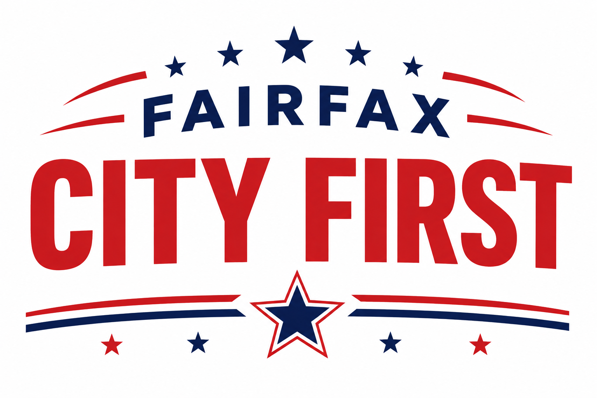

Stacy Hall
For Fairfax City Council
Experienced leader, former School Board member, and proven advocate for Fairfax families.
Visit Site
A community-driven effort to elect experienced, dedicated leaders who will keep Fairfax City at the center of every decision.
Fairfax City First brings together residents who believe our city deserves principled, practical leadership. We are supporting three council candidates committed to fiscal responsibility, strong schools, safe neighborhoods, and a vibrant local economy — always with Fairfax City first.
Click a name to visit their campaign website and learn more.
For Fairfax City Council
Experienced leader, former School Board member, and proven advocate for Fairfax families.
Visit SiteFor Fairfax City Council
Dedicated community voice focused on transparency, smart growth, and city services.
Visit SiteFor Fairfax City Council
Champion for public safety, local businesses, and responsible city budgeting.
Visit SiteJoin us out in the community. Check back for dates and details.